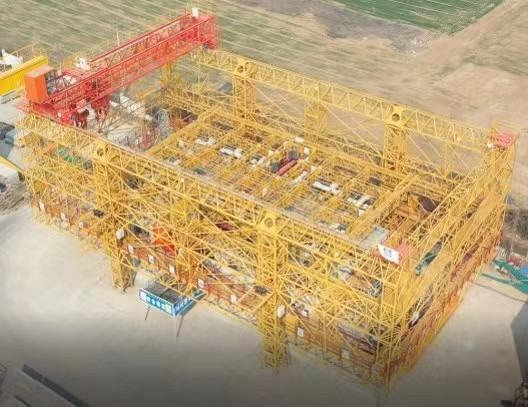
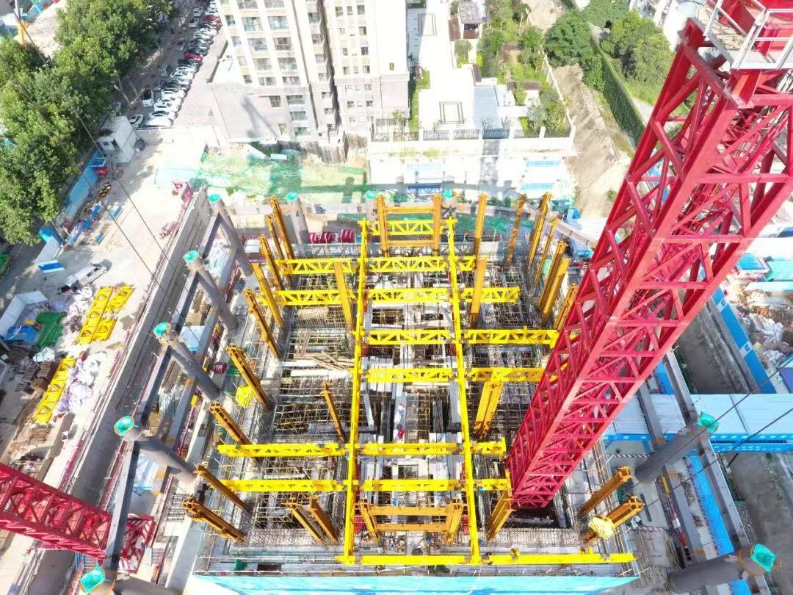
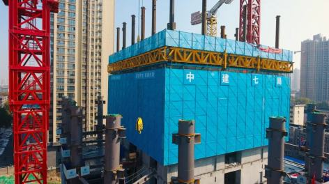

2023年中国城镇建筑总面积约为550亿平方米，建筑业总产值达到30万亿。随着我国城市化进程的加速和环保观念的深化，装配式建筑已经成为现代建筑行业的新趋势。到2025年，装配式建筑总产值将达到8.8万亿，2030年将达到11.7万亿。该项目面向国家重大工程装备与智能建造协同发展需求，针对目前我国装配式建筑施工过程中工业化建筑构件安装存在标准化、机械化、智能化程度低等问题，瞄准工业化建筑构件智能安装需求，沈阳工业大学等四家单位组成产学研用研发团队，依托“十三五”国家重点研发计划项目，围绕工业化建筑构件智能安装关键技术进行颠覆性创新设计，成果如下：
项目成果经中国机械工业联合会权威机构组织的以谭建荣院士为组长的鉴定委员会鉴定，项目技术总体上达到国际先进水平，其中可折展吊装机械臂设计技术与安装控制技术达到国际领先水平。项目获批发明专利41项，制/修订相关国家标准5项，发表学术论文54篇。项目技术及产品应用于西安荣民金融中心、首个超200米的超高层建筑－重庆喜来登国际中心、全国首例双向八车道装配式明挖拱形隧道新森大道隧道等项目上得到应用。近三年，新增销售额84.98亿元，新增利润9.27亿元。技术服务于国家“一带一路”战略，应用于沙特、阿联酋等国家基础设施建设，展现中国智能建造技术能力。
发展装配式建筑已上升为国家战略，国务院发布的《关于加快新型建筑工业化发展的若干意见》强调要打造具有国际竞争力的“中国建造”品牌，到2035年，步入智能建造世界强国。装配式建筑已经成为建筑行业的新趋势。然而，用于传统现浇建筑的塔式起重机存在柔性大、可控精度与自动化程度低等严重不足，并不适用于对工业化建筑构件安装精度要求极高的装配式建筑施工，使得装配式建筑成本“不降反升”。据统计当装配率在20%~50%之间，其单房造价比现浇建筑高100~500元/平米。工业化建筑构件安装精度差、效率低、用工大已成为制约装配式建筑发展的“致命痛点”。因此，亟需研发和应用具有标准化、数字化、智能化的工业化建筑构件安装新模式与新装备。科技部、住建部等已将“高层建筑自升降智能建造平台”等大型工程装备的研发列入十四五重点实施任务。项目组围绕工业化建筑构件智能安装成套装备开展设计攻关，总体设计路线如图1。
图1. 总体设计路线图
项目团队围绕工业化建筑构件智能安装技术进行科研攻关与颠覆性创新设计，提出了成套装备数字化正向设计理论与多点同步顶升方法，设计制造了刚柔耦合可折展吊装机械臂，研发了多平台协调吊运与自动定位控制系统，开发了BIM+数字孪生智能运维平台，研制出具有自主知识产权的工业化建筑构件智能安装成套装备并实现了产业化推广应用，打破了国外长期技术垄断。
关键技术一：颠覆性创新研发了工业化建筑构件智能安装成套装备正向设计与同步顶升技术
【学科名称: 工程机械-起重机(11003)，授权发明专利9项，授权实用新型专利3项，制定国家标准2项，发表学术论文11篇，见附件4-1-8、4-1-9、4-1-11、4-1-13、4-1-14、4-1-15、4-2-3、4-4-1、4-4-2、6-1-6】
通过对工业化建筑构件智能安装成套装备正向设计与顶升技术研究，研发形成了成套装备数字化正向设计与制造工艺体系，项目研制了成套装备多点同步顶升装置，平台装备可实现120m×20m规格的256种组合的模块化建造，建造高度达100m，额定起重量15t，跨距20m，同步顶升最大误差20mm，上述指标达到国际先进水平。
（1）工业化建筑构件智能安装成套装备正向设计技术
项目设计研发了工业化建筑构件智能安装成套装备，基于“供-吊-运-装”建筑数据模型得到了装备与建筑外形之间的模块化协调关系，提出了基于建筑外形的模块化设计方法。提出了载荷-环境耦合、虚实融合的大型工程装备数字化正向设计方法，设计了与装配式建筑施工工艺、建筑外形与尺寸相适应的多层桁架结构，该结构主要由包围在建筑外围专用起重平台框架、支撑柱、支撑柱附墙系统、专用起重平台工作临时稳定装置等组成。结构所受极限偏载载荷实验结果显示，平台静载下最大变形为7mm，最大振动幅度小于2mm且变形小于9mm。工业化建筑构件智能安装成套装备如图2所示。
图2. 工业化建筑构件智能安装成套装备
（2）工业化建筑构件智能安装成套装备多点同步顶升技术
针对多点同步自动顶升控制技术展开研究，提出了成套装备多点同步顶升系统性能指标函数，根据液压缸分布位置与相应的位移传感器组成位置闭环，从而实现平台装备顶升的位移和姿态耦合控制。提出了成套装备多点精准顶升平衡补偿策略，开发了基于多变量、多目标最优理论的一致性同步顶升控制系统。成套装备多点同步顶升控制系统与各执行机构如图3所示。
图3. 成套装备多点同步顶升系统与各执行机构
关键技术二：颠覆性创新设计形成了工业化建筑构件智能安装成套装备吊装机械臂与末端偏移误差补偿技术体系
【学科名称: 工程机械-起重机(11003)，授权发明专利9项，授权实用新型专利4项，发表学术论文9篇，见附件4-1-4、4-1-7、4-1-10、4-1-16、4-1-17、4-1-18、4-2-4、6-1-2、6-1-3、6-1-4】
本项目通过对工业化建筑构件智能安装成套装备刚柔耦合可折展吊装机械臂设计技术进行研究，研制了以构件自动取放、空中调姿功能为目标的刚柔耦合可折展吊装机械臂，开发了吊装机械臂末端偏移补偿控制系统。成套装备吊装机械臂起升速度0~10m/min，构件自动就位精度±5mm，上述指标达到国际先进水平。吊装机械臂具有构件垂直度自动调整功能，6自由度自动调姿功能以及自动脱挂钩功能指标达到国际领先水平。
（1）刚柔耦合可折展吊装机械臂设计技术
为解决传统柔性吊装无法实现自动脱挂钩的问题，项目创新性地提出了刚柔耦合可折展吊装机械臂设计与动力学特性分析理论，构建了考虑复杂结构变形连续性的高阶耦合动力学模型，利用柔索驱动机构良好的轻量化与负载质量比高的性能，结合空间可折展结构的特点，集成创新设计形成刚柔耦合可折展吊装机械臂装置，突破刚柔耦合吊装模式下长运动链精度一致性难题，实现高精度自动抓取和脱钩功能。项目研制了自动脱挂钩装置、构件起重升降机构、间距调整机构以及吊装姿态调整机构。刚柔耦合可折展吊装机械臂如图4所示。
图4. 刚柔耦合可折展吊装机械臂
（2）刚柔耦合可折展吊装机械臂末端偏移误差补偿技术
项目研发了智能安装成套装备吊装机械臂末端偏移误差补偿技术。
项目深入分析了结构参数、绳索缠绕方式以及平台结构强度差异等潜在的误差源，揭示了不同绳索缠绕方式对吊装偏移量的影响机理，获取了机械臂末端结构变形、运动链等误差对绝对位姿参数的影响特性，提出了基于吊装机械臂横纵向误差耦合补偿的理论方法。设计了结构振动、风载、负载突变等多干扰工况下吊装位姿误差补偿控制策略，构建了补偿机构的多参数修正优化模型，动态调整补偿机构的补偿精度，抑制补偿精度的衰退。本技术解决了吊装机械臂的末端偏移问题，提高构件吊装精度和效率，刚柔耦合可折展吊装机械臂末端偏移误差补偿技术原理如图5所示。
图5. 刚柔耦合可折展吊装机械臂末端偏移误差补偿技术原理
关键技术三：颠覆性创新开发了工业化建筑构件智能安装成套装备数字化控制系统
【学科名称: 数字化与自动化技术(11501)，授权发明专利8项，授权实用新型专利5项，发表学术论文8篇，见附件4-1-1、4-1-2、4-1-3、4-1-5、4-1-6、4-2-1、4-2-2、4-2-5、6-1-5、6-1-7、6-1-8】
本项目通过对工业化建筑构件智能安装成套装备数字化控制技术进行研究，成功开发了多平台交叉协调吊运控制与自动定位系统，提高了工业化建筑构件智能安装成套装备的自动化水平和控制精度。成套装备构件位置监测精度达到±3mm，构件方位角监测精度达到±1°，上述指标达到国际先进水平，构件自动吊运技术达到国际领先水平。
（1）工业化建筑构件智能安装成套装备多平台交叉协调吊运技术
项目研发了工业化建筑构件智能安装成套装备多平台交叉协调吊运技术，提出了基于吊运避碰的多平台交叉吊运协调控制策略（如图6所示）。基于施工环境障碍物信息对多平台碰撞检测模型进行优化，构造系统状态误差评价函数与辅助变量，提出一种基于动态施工环境的多平台矢量碰撞快速检测方法。开发了特定网络通讯拓扑条件下的多平台协调吊运作业中控系统，子系统控制单元获取由中控系统发出的动作协调信息，实现了成套装备多平台协调吊运与避碰控制。集成创新并开发了以多平台为规划对象、避碰为规划目的的多平台交叉协调吊运系统，提高了水平和竖向吊运平台交叉作业的效率与安全性能。
图6. 成套装备多平台交叉协调吊运
（2）工业化建筑构件智能安装成套装备自动精确定位控制技术
项目研发了工业化建筑构件智能安装成套装备自动精确定位控制技术。考虑吊装环境存在的不确定性和外界干扰，本项目引入环境扰动项建立吊装系统动力学方程，提出了成套装备吊装系统自抗扰控制方法。根据吊装系统动力学方程，位姿模型以及视觉特征微分方程，设计了基于运动-结构-视觉分量复合反馈控制策略，研发了基于视觉反馈的精确定位控制技术，实现了成套装备的视觉反馈精确定位。基于驱动电机线性化特性推导出效率最优控制方程的表达式及其约束条件，分析了扰动力、摩擦力和非线性驱动力对成套装备台车控制系统的影响机理，建立了非线性驱动系统实时补偿数学模型，提出了自动精确定位实时补偿控制方法，进一步提升了成套装备自动精确定位控制系统的暂态控制性能。视觉反馈精确定位控制技术如图7所示。
图7. 视觉反馈精确定位控制技术
关键技术四：颠覆性创新构建了工业化建筑构件智能安装成套装备数字孪生管控及智能运维平台
【学科名称: 数字化与自动化技术(11501)，授权发明专利5项，登记软件著作权5项，发表学术论文8篇，见附件4-1-12、4-3-1、4-3-2、4-3-3、4-3-4、4-3-5、6-1-1】
针对装配式建筑建造现场人-机-环境协调难度大、智能化管理水平低等问题，提出了基于多源信息融合的数字孪生自优化模型构建技术（如图8所示），建立了BIM+智慧建造数字孪生一体化平台，开发了成套装备智能运维、多业务管控及实时预警监控系统，实现了多目标、多系统、多设备及多任务的一体化管理，提高了成套装备的信息化管理水平。
图8. 成套装备数字孪生自优化模型构建技术
（1）工业化建筑构件智能安装成套装备数字孪生管控技术
考虑不同吊运任务下智能安装过程与装备数字孪生模型的实时性要求，建立物理空间吊运安装信息与孪生模型的多维度、全要素、实时动态关联反馈交互机制，采用欠传感器条件下的数字孪生建模技术对横/竖向构件吊运平台等绗架结构生成具有虚实融合特性的管控模型。提出了人-机-环境虚拟协调与融合的BIM+数字孪生模型三维可视化多源数据深度挖掘线程管理技术，建立了多场景云计算环境下的机理数字模型轻量化表征方法，实现了对施工现场人-机-环境数据的可视化实时呈现。BIM+智慧建造数字孪生一体化平台如图9所示。
图9. BIM+智慧建造数字孪生一体化平台
（2）工业化建筑构件智能安装成套装备形性一体化数字孪生技术
考虑载荷、位移、振动等平台装备几何形态和结构力学性能，基于“算测融合、形性一体”的数字孪生技术，构建了部件-系统模型联动数字化试验技术及失效传递机制。建立成套装备执行机构绗架结构表面点蚀及裂纹、装备倾角、载荷、装备速度、振动等“形”、“性”特征与对应机理之间的潜在关联关系，通过机理和数据双驱动实现装备的多系统、多尺度、多状态动态检测。利用服役数据挖掘出的特征对装备模型进行服役状态推演，开发了智能远程运维系统保障装备安全高效运行和智能化运维。智能远程运维系统如图10所示。
图10. 基于平台结构表面特征和振动特性的智能远程运维系统
（3）基于数字孪生的工业化建筑构件智能安装成套装备实时预警技术
项目研发了数字孪生的吊运实时预警技术（如图11所示），以构件吊运平台为主体，分析其他从属吊运平台及固体障碍物的几何形态和距离，实时计算构件自动运行中关键吊具的位移、碰撞距离与空间交错角等信息，形成算测融合数字孪生综合安装平台装备运行安全实时预警监测系统。控制系统接收实时预警系统中提取的碰撞物空间数据，进行滤波、安全阈值判断等处理，控制声光报警模块，最后控制器将处理过后的数据打包上传至数字孪生系统，解析后形成可视化数据，提高装备运行安全性。
图11. 成套装备吊运实时预警技术
技术创新一：提出了基于载荷-环境耦合的成套装备数字化正向设计方法与多点同步顶升方法
针对平台装备结构体量大、跨距大以及外力荷载复杂多变等因素作用下结构稳定性差的问题展开研究，提出了载荷-环境耦合、虚实融合的大型工程装备数字化正向设计方法，并将该方法应用于平台装备主要承载结构的优化设计中。针对平台装备载荷大且分布不均、跨距大导致顶升不同步的问题，研发了一致性协同的成套装备多点同步顶升最优控制方法，基于多变量、多目标最优化理论设计了顶升系统最优化一致性控制器，实现了平台装备多点同步顶升。
主要知识产权：ZL201710967009.3，ZL202111400999.5，ZL202011147191.6，ZL201911180104.4，ZL202110906546.3，ZL201810736023.7，ZL201920687577.2
技术创新二：提出了刚柔耦合可折展吊装机械臂设计与末端偏移误差补偿方法
针对传统钢丝绳吊具柔性大、控制精度低且无法自动取放构件的问题，创新性地提出了刚柔耦合可折展吊装机械臂设计方法。集合柔索驱动机构轻量化与负载质量比高的特性，集成创新设计形成刚柔耦合可折展吊装机械臂，解决了传统纯柔性吊装模式无法实现建筑构件自动取放以及刚性吊装模式适应性差的难题。针对受多变量耦合影响的刚柔耦合可折展吊装机械臂末端偏移的问题，提出一种基于横纵向耦合误差闭环矢量反馈的吊装机械臂末端偏移误差补偿方法。揭示了各潜在误差源对吊装机械臂位姿参数的影响机理，建立了机械臂位姿与台车位置控制系统的映射关系模型。提高了吊装机构整体刚度与控制精度，实现了精确吊装与构件自动取放。
主要知识产权：ZL202010736746.4，ZL202111490722.6，ZL202110906547.8，ZL201711296063.6，ZL201711296061.7，ZL201911041526.3，ZL201920574147.X
技术创新三：提出了成套装备多平台协调吊运与视觉反馈精确定位控制方法
针对工业化建筑构件安装成套装备多平台交叉吊运空间路径重叠与协调控制响应慢的问题，提出了包含吊运避碰的多平台交叉吊运协调控制策略，开发了多平台协调吊运中控系统，实现了水平和竖向吊运平台的高效交叉协调作业。针对工业化建筑构件安装成套装备自动化定位精度低的问题，创新性地提出了基于运动-结构-视觉分量复合反馈的构件自动定位方法，建立基于运动-结构-视觉复合状态向量，构造包含台车水平位移和定位误差的控制函数，实现了工业化建筑构件安装成套装备吊装系统自动精确定位。
主要知识产权：ZL201910243226.7，ZL201811522581.X，ZL201810748660.6，ZL202111157562.3，ZL201910643572.4，ZL201922304794.1，ZL201920689690.4，ZL201920648111.1
技术创新四：提出了基于BIM+智慧建造的数字孪生智能管控及运维一体化平台构建方法
针对成套装备所面临的数字孪生模型复杂、模拟耗时、实时性差等难题，提出了基于BIM+智慧建造的智能安装成套装备“算测融合、形性一体”的数字孪生模型虚实组态精确重构技术，实现了多目标、多系统、多设备及多任务的一体化管控。针对平台装备性能演变机理不明，装备服役可靠性低的问题，研发了基于数字孪生技术的绗架结构表面点蚀及裂纹、装备倾角、载荷、装备速度、振动等多源融合处理的智能运维系统，解决了装备极端工况下各执行机构运行状态数据实时监测和智能化运维问题。基于“算测融合、形性一体”数字孪生实时预警监控技术，研发形成工业化建筑构件安装成套装备运行安全实时预警系统，保障装备的安全与高效运行。
主要知识产权：ZL202010336706.0，2019SR0804866，2019SR0805867，2019SR0804869，2019SR0546713，2019SR0847003
针对传统装备在装配式建筑施工中存在的问题，创新研发了工业化建筑构件智能安装成套装备及其关键技术，形成了集构件自动取放、吊运、调姿、就位于一体的自动化、数字化和模块化的大型工业化建筑构件智能安装成套装备。选取国际上最具代表性的Obayashi和Fraco等装备与本项目装备进行指标对比，详细对比数据结果如表1所示。
表1 装备主要技术参数与国内外同类产品数据对比
序号
技术指标
国际同类技术
本项目技术
技术水平
1
平台参数
额定起重量
12t
15t
国际先进
跨距
15m
20m
国际先进
同步顶升最大误差
22mm
20mm
国际先进
2
控制精度
构件自动就位精度
±7mm
±5mm
国际先进
构件位置监测精度
±5mm
±3mm
国际先进
构件方位角监测精度
±3°
±1°
国际先进
3
自动化
程度
构件垂直度调整
手动
自动
国际领先
构件6自由度调姿
手动
自动
国际领先
构件脱挂钩
手动
自动
国际领先
构件吊运
手动
自动
国际领先
项目成果经中国机械工业联合会组织的以谭建荣院士为主任的鉴定委员会认为，与国内外同类产品相比，该项目技术总体上达到国际先进水平，其中可折展吊装机械臂设计技术与安装控制技术达到国际领先水平。额定起重量、同步顶升误差、构件自动就位精度、位置监测精度、方位角精度等指标达到国际先进水平，项目首创性的研发了构件垂直度调整系统、吊装机械臂6自由度调姿系统、自动脱挂钩系统与无人化自动吊运系统，施工效率提高15%，减少用工50%，为我国的建筑工业化提供了强有力的智能化施工装备支撑与保障。同时，项目技术装备服务于国家“一带一路”战略，应用于南亚的孟加拉，尼泊尔以及中东的沙特，阿联酋等国家基础设施建设，通过输出中国产品，中国技术和中国标准，展现中国智能建造技术能力，助推国家海外事业实现高质量发展。

